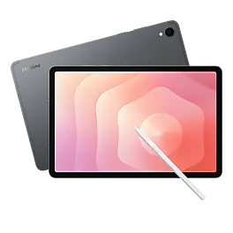
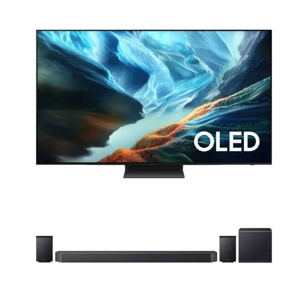
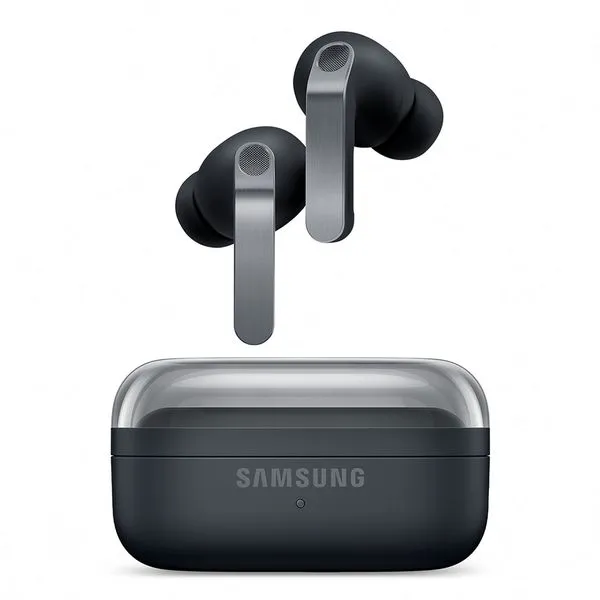

O Samsung Galaxy S26 5G é um smartphone topo de linha compacto que combina alto desempenho,
recursos
avançados de inteligência artificial (Galaxy AI) e um design ergonômico.

Samsung Galaxy Tab S11 Ultra é um tablet topo de linha com tela gigante de 14,
6 polegadas Dynamic AMOLED
2X, 120 Hz e processador MediaTek Dimensity 9400+.

A TV Samsung une uma tela de altíssimo contraste com um sistema de som robusto
de cinema para uma
experiência audiovisual completa.

O Samsung Galaxy Buds4 Pro é o fone de ouvido sem fio topo de linha da Samsung,
focado em som de alta
fidelidade, inteligência artificial e encaixe intra-auricular seguro.